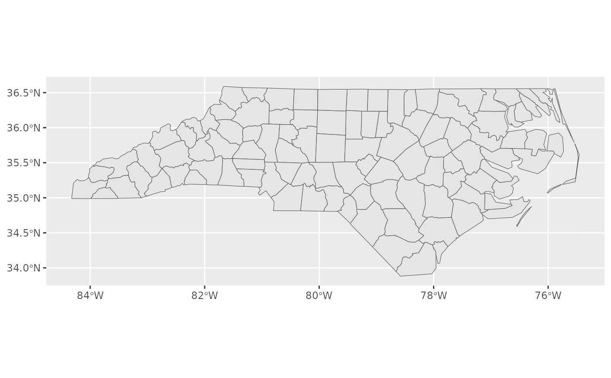

Location is used as the data parameter of layer_location_data so this
function is primarily appropriate for the layer_mapbox (geom = "mapbox").
Usage
make_location_map(
location = NULL,
dist = NULL,
diag_ratio = NULL,
unit = NULL,
asp = NULL,
data = NULL,
crs = NULL,
paper = NULL,
width = NULL,
height = NULL,
units = "in",
orientation = NULL,
geom = "sf",
basemap = TRUE,
bg_layer = NULL,
layer = NULL,
fg_layer = NULL,
addon = NULL,
neatline = FALSE,
labs_ext_params = list(...),
save = FALSE,
ggsave_params = list(dpi = 300, ...),
...,
env = caller_env(),
call = caller_env()
)
make_social_map(
location,
dist = NULL,
diag_ratio = NULL,
unit = NULL,
asp = NULL,
crs = 3857,
image = NULL,
platform = NULL,
format = NULL,
orientation = NULL,
basemap = TRUE,
geom = "mapbox",
save = FALSE,
ggsave_params = list(fileext = "jpeg", dpi = 72, ...),
...
)
make_image_map(
image_path,
location = NULL,
dist = NULL,
diag_ratio = NULL,
unit = NULL,
asp = NULL,
data = NULL,
crs = 3857,
paper = "Letter",
orientation = NULL,
geom = "mapbox",
style_url = NULL,
basemap = TRUE,
bg_layer = NULL,
fg_layer = NULL,
save = FALSE,
ggsave_params = list(dpi = 300, ...),
image_geom = "label",
groupname_col = NULL,
group_meta = NULL,
number = FALSE,
num_by_group = FALSE,
num_style = NULL,
num_start = 1,
suffix = NULL,
sort = "dist_xmin_ymax",
desc = FALSE,
...
)
make_layer_map(
bg_layer = NULL,
layer = NULL,
fg_layer = NULL,
addon = NULL,
basemap = NULL,
neatline = NULL,
labs_ext_params = NULL,
save = FALSE,
ggsave_params = list(width = 5, height = 4, unit = "in", dpi = 300),
env = caller_env(),
call = caller_env()
)Arguments
- location
A sf object passed to
layer_location_data()with data if layer isNULL. location is ignored if layer is provided. If data isNULL, location is passed as data to facilitate using this function withgeom = "mapbox"where data is used to define the map area. Defaults toNULL- dist
buffer distance in units. Optional.
- diag_ratio
ratio of diagonal distance of area's bounding box used as buffer distance. e.g. if the diagonal distance is 3000 meters and the "diag_ratio = 0.1" a 300 meter will be used. Ignored when
distis provided.- unit
Units for buffer. Supported options include "meter", "foot", "kilometer", and "mile", "nautical mile" Common abbreviations (e.g. "km" instead of "kilometer") are also supported. Distance in units is converted to units matching GDAL units for x; defaults to "meter"
- asp
Aspect ratio of width to height as a numeric value (e.g. 0.33) or character (e.g. "1:3"). If numeric,
get_asp()returns the same value without modification.- data
Character string (e.g. url, file path, or name of data from package) for a spatial data or a
sf,sfc, orbboxobject with geometry overlapping the location. If data isNULL, all unnamed parameters are passed tosfext::read_sf_ext()with a bbox based on location. If data is notNULLand not a data.frame, url, file path, or bbox, conversion to a sf object will still always be attempted withsfext::as_sf().- crs
Coordinate reference system of bounding box to return; defaults to
NULLwhich maintains the crs of the input object.- paper
Paper matching name from
paper_sizes(e.g. "letter"). Not case sensitive.- width
Page width in "in", "px" or "mm" units. Default:
NULL- height
Page height in "in", "px" or "mm" units. Default:
NULL- units
Units to convert page dimensions to using
convert_unit_type().- orientation
Page orientation, Default:
NULL. Supported options are "portrait", "landscape", or "square".- geom
A character string indicating which ggplot2 geom to use, Default: 'sf'. Options include "sf" (
ggplot2::geom_sf()), "icon" (layer_icon()), "markers" (layer_markers()), "sf_text" (ggplot2::geom_sf_text()), and "sf_label" (ggplot2::geom_sf_label()). See details for a full list.- basemap
Either a logical vector or ggplot object.
If logical and
TRUE, add x toggplot2::ggplot(). IfFALSE, return x as is.If a ggplot, add x to basemap object.
If a ggproto object (or list that contains a ggproto object), add x and basemap object to
ggplot2::ggplot().- bg_layer, fg_layer, addon
A ggplot2 layer or a list of ggproto objects (e.g. scales, labels, etc.) to add to the background or foreground of the primary map layer defined by
"geom"and other parameters. If the geom creates an opaque layer or layer is an opaque layer (e.g. a layer produced bylayer_mapbox()) that covers the full map extent, the bg_layer will not be visible.- layer
A ggplot2 layer or a list of ggproto objects. If layer is provided, all parameters passed to
layer_location_data()(including data, location, dist, diag_ratio, unit, asp, crs, and geom) will be ignored. In this case, the function simply stacks the bg_layer, layer, and fg_layer objects then applies the basemap and neatline (using theset_basemap()andset_neatline()helper functions.)- neatline
A logical object,
CoordSfobject, or a list containing aCoordSfobject (typically fromlayer_neatline()) added to layer byset_neatline().If logical and
TRUE, add a neatline layer using data, crs and any additional parameters passed to ... If logical andFALSE, return x as is.If object from
layer_neatline(), add it as is.
- labs_ext_params
Optional parameters passed to
labs_ext().- save
If
TRUE, save file with ggsave_ext usingggsave_params. Defaults toFALSE.- ggsave_params
List of parameters passed to
papersize::ggsave_ext().- ...
Additional parameters passed to
layer_location_data()formake_location_map()ormake_social_map()or tolayer_markers()formake_image_map().- env
Environment for evaluation of
labs_ext()if labs_ext_params is supplied.- call
The execution environment of a currently running function, e.g.
caller_env(). The function will be mentioned in error messages as the source of the error. See thecallargument ofabort()for more information.- image
Image name passed to name parameter of
get_social_size().- platform
Social media platform, "Instagram", "Facebook", or "Twitter", Default:
NULL- format
Image format, "post", "story", or "cover", Default:
NULL- image_path
path to location of images for
make_image_map()- style_url
A Mapbox style url; defaults to
NULL.- image_geom
For
make_image_map(), geom to use with layer_markers to mark the location of images (based on EXIF metadata).- groupname_col
Group column name, used to join group metadata if group_meta is a non-spatial data frame; Default:
NULL- group_meta
Group metadata as a data frame or sf object that intersect with markers (using join function); Default:
NULL- number
If
TRUE, number markers usinglayer_markers()(not currently supported)- num_by_group
If
TRUE, numbers are added by group based on groupname_col.- num_style
Style of enumeration, either "arabic", "alph", "Alph", "roman", "Roman".
- num_start
Starting number; defaults to 1.
- suffix
Character to appended to "number" column. (e.g. "." for "1." or ":" for "1:"). Can also be a character vector with the same length as the number column.
- sort
Sort column name, Default: "dist_xmin_ymax".
- desc
If
TRUE, sort descending; defaultFALSE.
Details
Using make_image_map():
make_image_map() wraps sfext::read_sf_exif() and make_location_map().
It is designed for making simple maps of photos in combination with reference
tables.
Examples
nc <- sf::read_sf(system.file("shape/nc.shp", package = "sf"))
make_location_map(
location = nc
)

name <- "North Carolina"
make_location_map(
location = nc,
labs_ext_params = list(
title = "Map of {name}"
)
)
#> Error: Failed to evaluate glue component {name}
#> Caused by error:
#> ! object 'name' not found
make_location_map(
data = nc,
location = nc[2, ],
dist = 2,
unit = "mi",
crop = FALSE,
addon = ggplot2::theme_minimal(),
labs_ext_params = list(
title = "Map of {nc[2, ]$NAME} County"
)
)
#> Error: Failed to evaluate glue component {nc[2, ]$NAME}
#> Caused by error:
#> ! object 'nc' not found
make_location_map(
basemap = ggplot(data = nc[2,]),
fg_layer = geom_sf_text(aes(label = NAME)),
data = nc,
location = nc[2, ],
mapping = aes(fill = NAME),
addon = guides(fill = "none"),
dist = 2,
unit = "mi",
crop = FALSE,
neatline = TRUE,
labs_ext_params = list(
title = "Map of {nc[2, ]$NAME} and surrounding {name} counties"
)
)
#> Error: Failed to evaluate glue component {nc[2, ]$NAME}
#> Caused by error:
#> ! object 'nc' not found